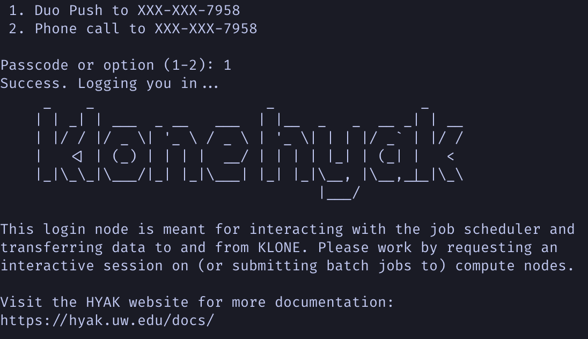
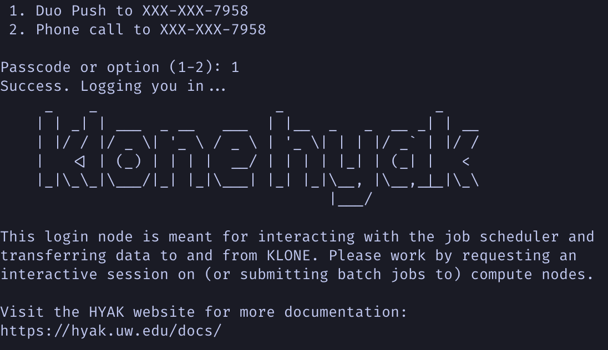
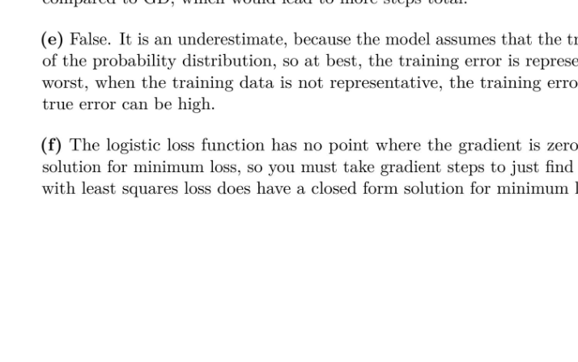
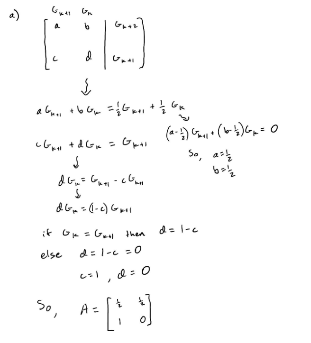
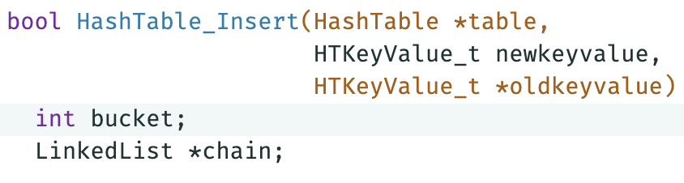
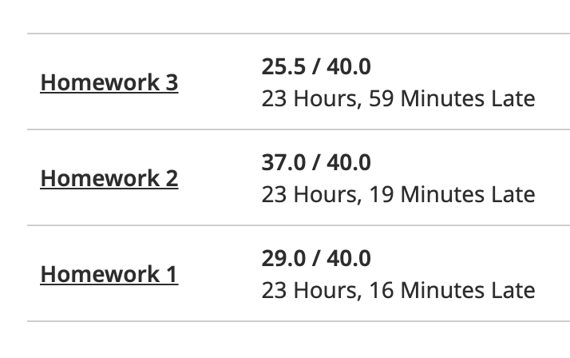
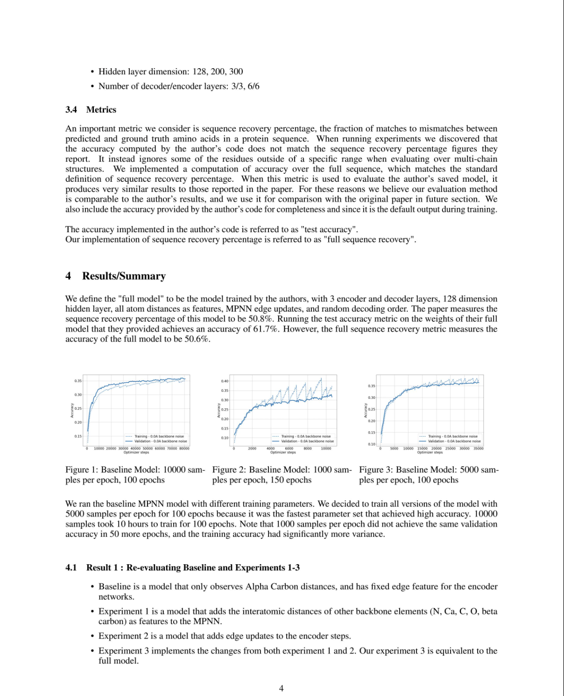

Fall
Over the summer, I studied abroad in Sweden, in the interdisciplinary honors program.
We learned about Swedish legal history and how that connected to the society and ideas of justice at the time.
I also tried many new things and made some great friends, like this banana curry pizza I tried with Om.
 

I joined the Statistical Physics of Evolving Systems lab, where I worked under a computer science PhD student building machine learning models for protein structure prediction tasks.
Much of my work was spent on the UW compute cluster called Klone, where I banged my head against the wall trying to get the proper python packages installed to run code in this scary new environment.
Winter
This artifact shows a scary moment for me when I was taking my first machine learning course.
I was motivated to take machine learning because that was what I needed to know to start doing real research work in the lab.
In this assignment, my work was flagged for possible cheating because I had included a part f when there was no such part in the assignment.
The problem turned out to be that I had used my previous assignment as a starting point because the formatting was correct and had forgotten to delete that answer.
My TA was a sixth year grad student, and I was one of the few students who went to section, and one of the even fewer who spoke in section.
He was very supportive of me and we had a good laugh together about that cheating scare.


Advanced linear algebra was the first math course that had any sort of proof writing in it.
This artifact shows a small and informal proof, where the goal is to prove what a matrix must be.
In this class we were encouraged to avoid busy work, we could use computational tools to do the computation.
So, the focus was on understanding how to show the concepts.
This style of abstract math was new and I wanted more.
Spring
In the quarter from hell, my first sign that I had put too much on my plate was when I didn't complete the first project for my systems programming course.
The assignment was pretty straightforward, probably because it was the first one.
We were using pointers in C, and I made an error by not dereferencing a pointer enough times.
I wasn't able to find that error in time. This was the first time I truly hadn't been able to finish something within the deadline, and that hit me hard.


My poor grades in my algorithms course reveal how I never was able to get my footing in this quarter.
You can also see the time pressure I was under, turning in the assignments as late as possible.
I sometimes was only able to spend a single day on an assignment.
There was all this interesting material I wanted to learn, and I was pretty much cramming week after week.
This is a screenshot from my final project for Advanced Machine Learning.
This class is where I got the first taste of advanced coursework, and the research process.
In a group of 4 students, we replicated some of the results of a paper about a deep learning model in computational biology called ProteinMPNN.
This class was both easier and harder than a standard class,
because some of the concepts were very complicated, but the
work I was expected to do took less time over the whole
quarter.
It was a large project, and the important skill I learned that I have taken to other classes has been on how to work with other people to accomplish something. The best thing we did was create a project outline very early on, so we all had an aligned vision for where we were going.
This was definitely a bright spot in this tough quarter.
